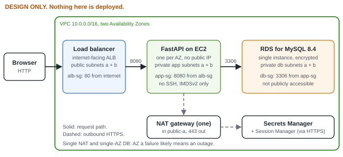

A study notebook for the project. Every line carries an evidence label so the page never claims more than the evidence supports.
VerifiedRun or seen in this project’s recorded evidence
ReportedIn the author’s notes, no result captured
ConceptualA general fact, not run here
UnverifiedBelieved, not evidenced
PlannedAn intention, not an event
1What this project teaches
VerifiedHow an application enforces prices, stock and validation on the server, and how to prove it with tests that fail when the code is broken (91 tests, 6/6 deliberate bugs caught).
PlannedHow to build a three-tier network by hand: public, private and database subnets, security-group chaining, NAT, ALB, RDS, IAM role, Session Manager.
PlannedHow to prove an AWS claim: a configuration screenshot versus a behaviour test (for example, a failed connection to the database from outside).
Architecture (design, not deployed)

PlannedTarget design. No AWS resource exists. Port numbers are destination ports.
Request flow
#
Step
Control
Label
1
Browser sends HTTP 80 to the internet-facing ALB
alb-sg
Planned
2
ALB forwards to FastAPI on port 8080 in a private subnet
app-sg from alb-sg
Planned
3
App validates input, reads and writes MySQL on 3306
db-sg from app-sg
Planned (code Verified on SQLite)
4
At startup the app reads two secrets using its IAM role, through NAT on 443
role limited to two ARNs
Planned
5
ALB health check calls /health, which does not query the database
liveness only
Verified locally
Why it matters: a healthy target group proves only that the ALB reached port 8080 and got a 200. It does not prove the database is secure or that checkout works.
Source: this repository only. Nothing here is a claimed deployment or metric.1 / 3
Visual project notebook · page 2 of 3
The application: cart, orders and data
Cart and order workflow
VerifiedBehaviour covered by automated tests on SQLite. Not run against MySQL or AWS.
The atomic stock reservation (from backend/services/orders.py)
UPDATE product_sizes SET stock = stock - :qty
WHERE product_id = :p AND size = :s AND stock >= :qty
-- rowcount != 1 => 409 "just sold out", roll back every line
PlannedA subnet is public only because its route table points at an internet gateway.
Security-group chain
Group
In
Out
alb-sg
80 from internet
8080 to app-sg
app-sg
8080 from alb-sg
3306 to db-sg, 443
db-sg
3306 from app-sg
none
PlannedNo rule for port 22 anywhere.
Commands
# local, run in this project
pytest # 91 passed
python tools/mutation_check.py # 6/6 caught
node tools/check-docs.mjs # documentation rules
# conceptual: not run, needs the AWS build
python -m backend.init_db --admin-user admin --seed # create tables once (admin, prompted password)
nc -vz <rds-endpoint> 3306 # from outside the VPC: must time out
curl -s http://127.0.0.1:8080/health/ready # on an instance: database ok
Verified for the first block. Conceptual for the second; none has been run against AWS.
Validation checklist for the AWS build
Test
Proves
Does not prove
Status
Failed connection to RDS from the internet (E-007)
Not reachable from outside
Not reachable from inside
Planned
Order row in RDS after an order via the ALB (E-008)
Browser to ALB to app to DB works
Behaviour under load
Planned
Two healthy targets in two AZs (E-009)
ALB reaches /health
DB security, checkout
Planned
Terminate one instance (E-012)
Service survives one instance
AZ-level failure
Planned
Revision questions
What exactly makes a subnet public, and what is in the database subnets’ route table?
Why does db-sg name app-sg instead of a CIDR range?
Why must a DB subnet group span two AZs when the instance runs in one?
What would break if /health queried the database?
Which parts of this project are verified, and which only designed?
Remember
Configuration is not behaviour. Say “planned” until I have my own screenshot and my own test.
Source: this repository only. Cost and price figures are intentionally absent.3 / 3